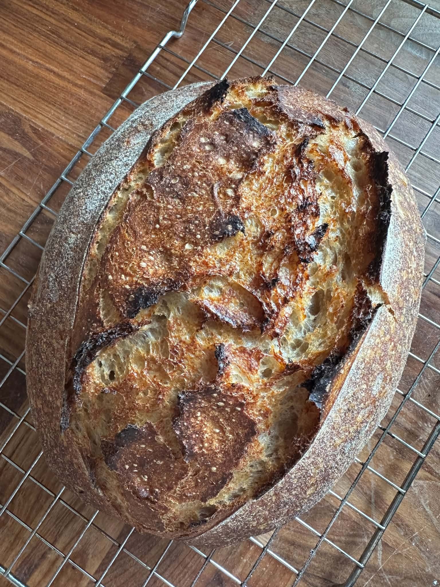
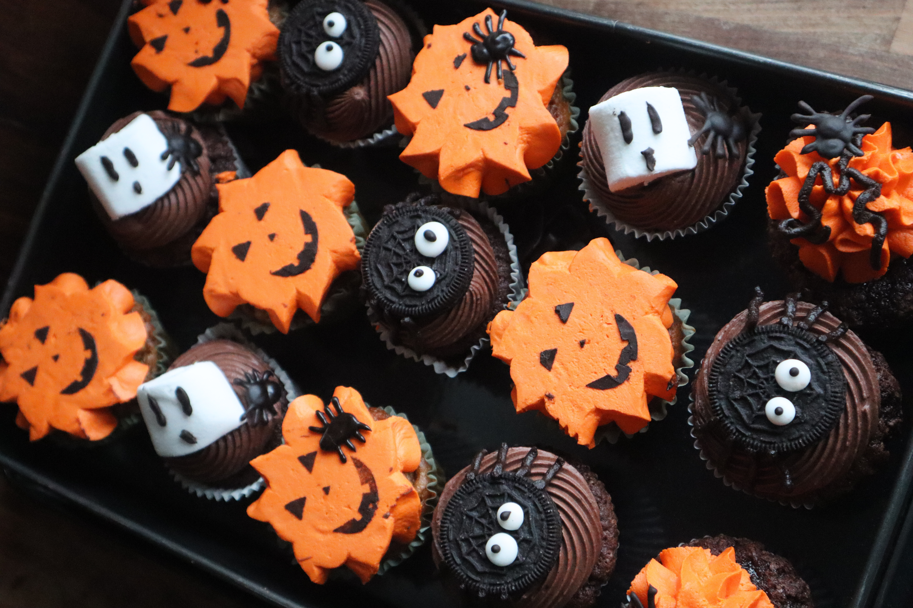
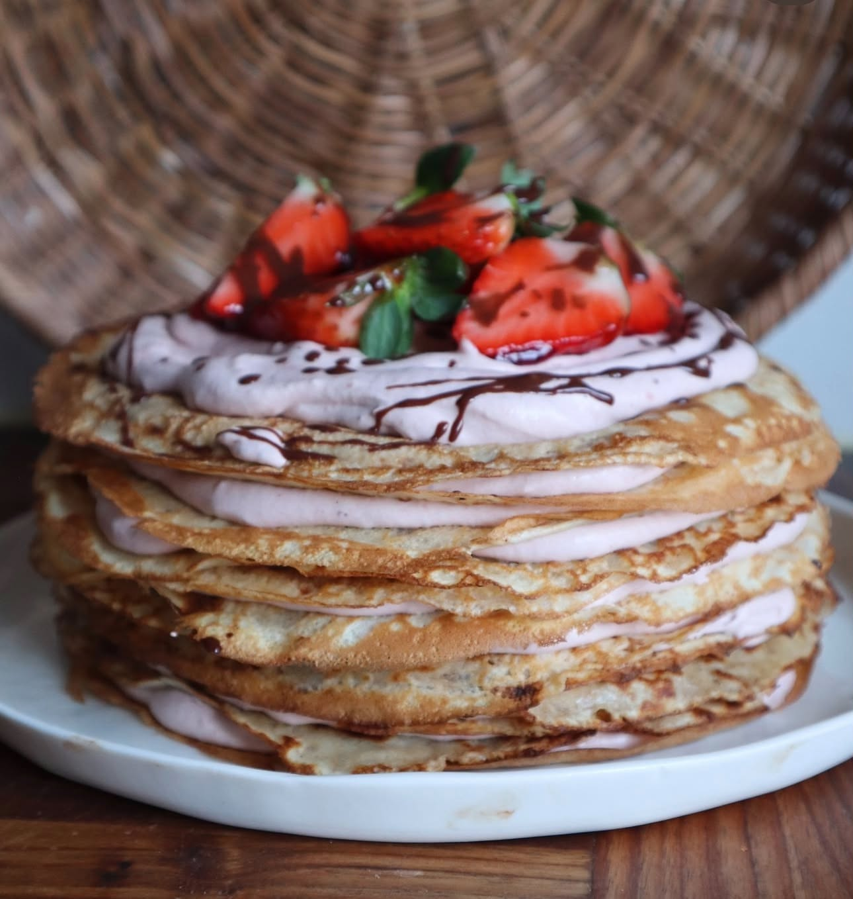
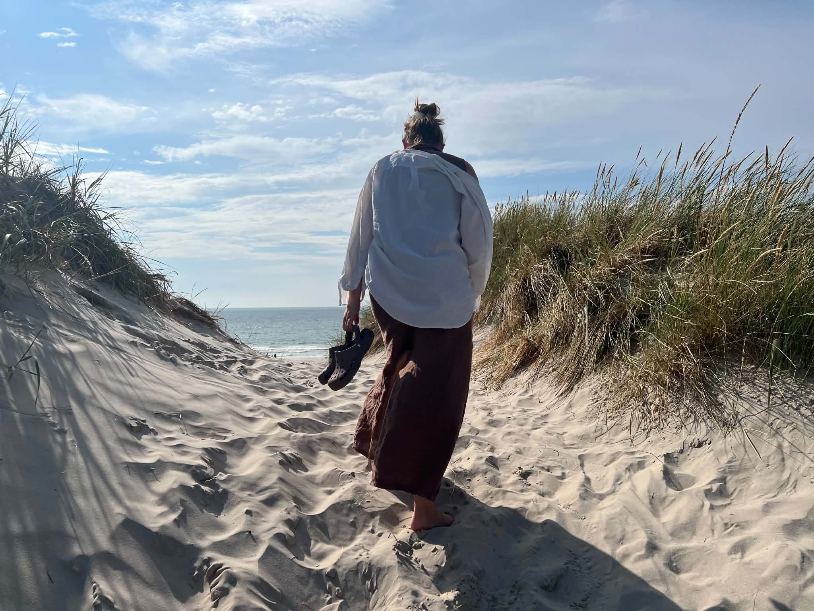
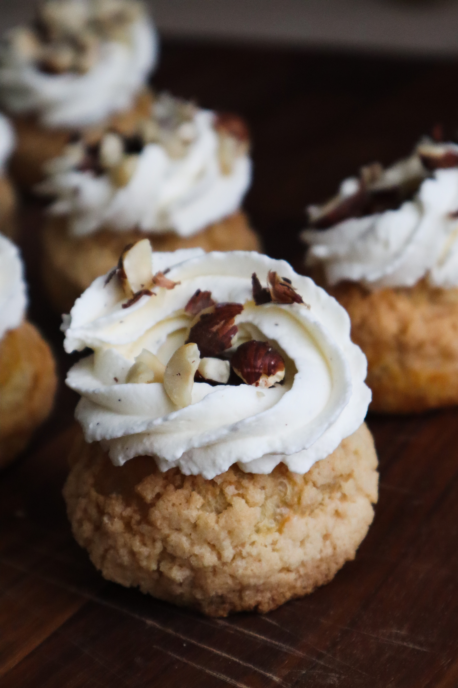

Favorite Creations





Welcome to my little corner of the internet. I love baking, creating beautiful desserts, exploring nature and finding inspiration in everyday moments.
Explore My World
I am passionate about baking and creating homemade treats, from sourdough bread and cakes to seasonal desserts and pastries. Food is not only about taste but also about creativity, aesthetics and sharing moments with others.
Beyond the kitchen, I enjoy spending time by the coast, appreciating natural landscapes and documenting beautiful moments through photography.




Cakes, pastries, sourdough and creative desserts.
Capturing beautiful moments and handmade creations.
Beaches, open skies and peaceful landscapes.